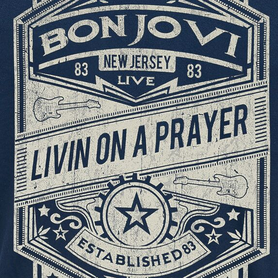

Once upon a time not so long ago Tommy used to work on the docks, union's been on strike He's down on his luck, it's tough, so tough Gina works the diner all day working for her man She brings home her pay, for love, for love She says, we've got to hold on to what we've got It doesn't make a difference if we make it or not We've got each other and that's a lot for love We'll give it a shot Woah, we're half way there Woah, livin' on a prayer Take my hand, we'll make it I swear Woah, livin' on a prayer Tommy's got his six-string in hock Now he's holding in what he used to make it talk So tough, it's tough Gina dreams of running away When she cries in the night, Tommy whispers Baby, it's okay, someday We've got to hold on to what we've got It doesn't make a difference if we make it or not We've got each other and that's a lot for love We'll give it a shot Woah, we're half way there Woah, livin' on a prayer Take my hand, we'll make it I swear Woah, livin' on a prayer Livin' on a prayer Oh, we've got to hold on, ready or not You live for the fight when it's all that you've got Woah, we're half way there Woah, livin' on a prayer Take my hand, we'll make it I swear Woah, livin' on a prayer Woah, we're half way there Woah, livin' on a prayer Take my hand, we'll make it I swear Woah, livin' on a prayer Woah, we're half way there Woah, livin' on a prayer Take my hand, we'll make it I swear Woah, livin' on a prayer
